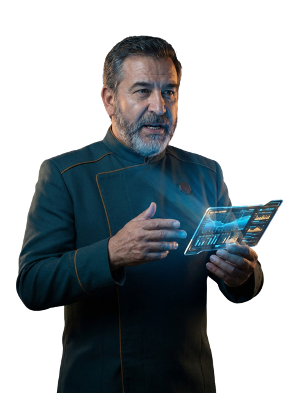

◈ STARGATE
Comandante
· docentes
Mi nave
Gestionar grupos
Ayuda
▾
Academia
El curso del profesorado, a tu ritmo
Guías
La rápida, sin historia, o la completa
Escribir al Mando
Una duda, una idea o algo que falla
▶
Visita guiada
Ayuda · profesorado
Las guías
Dos maneras de conocer STARGATE. Elige la de hoy: puedes cambiar cuando quieras.

La guía rápida
STARGATE en claro
Sin la historia y al grano: lo que haces tú, lo que hacen tus estudiantes y el temario, tema a tema.
Abrir la guía rápida →
La guía completa
La Guía
Con la historia entera: la Tripulación Cero, los retos y las insignias, el calendario de las 15 semanas y la evaluación.
Abrir la guía completa →